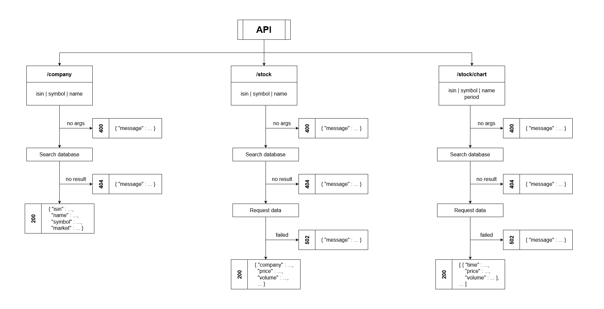

Creating a REST API to get real-time data from the Euronext Paris stock exchange
November 14, 2022
I had the idea to create a web application that would allow me to easily visualise my stock
wallet online. I started looking for a free API that would give me real-time or delayed information about
the Euronext stock exchange. Sadly I couldn’t find any free solution that would satisfy my needs (they were
all heavily restricted or paid). So I decided to create my own. It will be useful if I ever want to create
my
web app.
The fonctionalities
This API has 3 roles. It has access to a database of all the companies listed on the Euronext
Paris stock exchange. Based on that, it can provide information on any company when given either their name,
symbol, or isin ID. Secondly, it can provide real-time information on the value of any stock, with
additional data (opening price, highest and lowest price, vwap...). Finally it can access historical data,
up to the creation of the stock.
/company : Get information on a listed company
On the market, a company can be identified by its name, its symbol (often a shortened version
of its name), or its unique isin ID. When given one, the API will return a JSON object containing the rest
of them. The following examples return the same result:
GET /company?symbol=STM
GET /company?name=STMICROELECTRONICS
GET /company?isin=NL0000226223
{ "isin": "NL0000226223",
"name": "STMICROELECTRONICS",
"symbol": "STM",
"market": "XPAR" }
/stock : Get real-time information on a stock
By specifying a company the same way as above, the API will return a JSON object containing
the current value of the stock, as well as a lot of additional data.
GET /stock?symbol=MC
{ "company": {"isin": "FR0000121014", "name": "LVMH", "symbol": "MC", "market": "XPAR"},
"price": 699.7,
"currency": "EUR",
"volume": {"value": 232350, "date": "14/11/2022 17:07"},
"turnover": 163045303,
"transactions": 22540,
"vwap": 701.6166,
"open": 704.5,
"high": {"price": 706.6, "time": "09:00"},
"low": {"price": 698.4, "time": "14:02"},
"threshold": [720.1, 678.3],
"previous_close": {"price": 706.2, "date": "11/11/2022"},
"52_week": [535.0, 758.5],
"market_cap": "351.878B",
"update_date": "14/11/2022 17:23 CET" }
/stock/chart : Get historical data on a stock
The API can also return historical data on a stock, namely the last values of the stock, the
dates, and the volumes. A new parameter 'period' is added, and can take 2 value : 'intraday' (default) or
'max'. The first one will return minute-by-minute data for the last 5 days, while the second one will return
daily data for as long as the stock has been listed.
GET /stock/chart?symbol=AIR (&period=intraday is implicit)
[ { "time": "2022-11-07 17:35",
"price": 113.98,
"volume": 306095
},
{ "time": "2022-11-08 09:00",
"price": 113.36,
"volume": 12964
},
... ]
How it works
The API works by mimicking the requests made by the Euronext website. To do that, I navigated
the website and used the developer tools to see what requests were made. I only kept the relevant ones and
send them myself to the Euronext servers.
The app is built in Python using the Flask framework. I used the 'requests' library to send
the requests to the Euronext servers, and the 'BeautifulSoup' library to parse the HTML responses. The
companies are stored in a SQLite database.
Getting the list of companies from the website
To this day, there are 1,760 companies on the Eurnoext markets. I only want to reference
companies that are on the Euronext Paris stock exchange, and tradable from Paris (430 in total). This is
done via a POST request, by adding a JSON object that acts as a filter. The response is a list of HTML text,
which is then parsed to extract the relevant information.
def get():
with open(FILTER) as f:
filter = json.load(f)
r = requests.post(URL, data=filter)
# The response is the list of all the stocks
# Save the response to a file in utf-8 encoding
response = r.json()
response = format_stock_list(response)
return response
The companies database
The list of companies can be subject to change, but this is very rare. Hence, to avoid
fetching it every time the API is called, it is stored in a database. The database is created when the app
is first launched, and updated every 24 hours. This speeds up the calls.
Getting historical information on a stock from the website
To fetch the historical prices of a stock, the API makes a GET request to the following URL:
https://live.euronext.com/intraday_chart/getChartData/{isin}-{market}/{period}
This call needs 3 arguments, the isin, the period, and the market on which the stock is listed
(which for some reason is not always 'XPAR', but can be 'XBRU' or 'XAMS'). This is where the database is
useful, as it contains the isin and the market for each company.
The response is a JSON object containing a list of dictionaries, each one containing the date,
the value, and the volume of the stock. The API then returns the same object, which is already perfectly
readable.
Getting real-time information on a stock from the website
The most important data is the current value of the stock. To get it, the API uses the same
method as above, but only keeps the last value.
The other detailed information is obtained by making a GET request to the following URL:
https://live.euronext.com/en/intraday_chart/getDetailedQuoteAjax/{isin}-{market}/full
The response is an HTML table, which is parsed to extract the relevant information. The API
then returns a JSON object containing everything that was read.
Handling errors
In my API, requests can fail for multiple reasons. That is why errors are generated and
brought to the user's attention. The following errors can occur :
- 400 : Bad request. The request is not formatted correctly.
- 404 : Not found. The company does not exist in the database.
- 502 : Bad gateway. The request to the Euronext servers failed for some reason.
Here is a diagram I made to guide my programming. It shows the different steps of the API, and
the different errors that can occur:
The logic of the API
Conclusion
I am very happy with the result. The API is reliable, quite fast (considering it makes
requests to other servers and not only to the local database), and easy to use. I will probably use it in
the future to create my web app. I don't plan on deploying it yet, as it is not very useful for the moment.
But if you want to use it, you can find the code on my
GitHub.